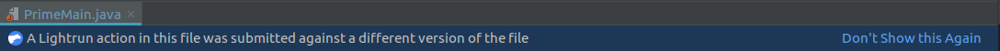

Troubleshooting¶
Sometimes issues may arise that interfere with smooth running. If you can't find solutions here, contact us and we'll be happy to help.
Agents don't appear in IDE¶
If agents don't appear in the IDE, it could be due to connection or authentication issues from the client.
To resolve these, try:
-
Restarting the IDE
-
Logging in to Lightrun from the IDE again
If the agents still don't appear, it could be because they are not running on the application server. Contact your administrator for assistance.
Username field is disabled at login¶
Try:
-
Make sure the Management server is reachable
-
Make sure the URL/port for the Management server were typed correctly
-
Try deleting and retyping a character in the URL to trigger validation again
-
Make sure there are no hidden characters/spaces before/after the URL
Lightrun actions in this file were submitted against a different version...¶

This notification warning pops up when one or more actions in the open file were set against different source code. This might happen if you set an action after making edits to the file, or if an action was set to the same file by another person whose source code differs from yours.
This warning can be ignored, as it doesn't block the activation of the action. However, actions set on mismatching source code can cause unexpected behavior, so it is recommended to solve the issue.
To solve the issue, make sure that the application you are debugging is the same as the code in your editor (or the editor of whoever set the action). If the problem persists, you can disable the warning by clicking \"Don't Show this Again\" in the notification panel (Notice that disabling this feature will also affect the actions the way other people view the actions you set).
Self-signed certificate is blocked¶
The troubleshooting may vary depends on either browser (also browser version) or OS, and the following cover most of the popular browsers and operating systems